Fight as a squad
Three squadmates with names, ranks and careers take your orders: move, hold, suppress, flank, regroup. They find cover and drag you back up. When one of them dies, they stay dead, and the replacement is greener.
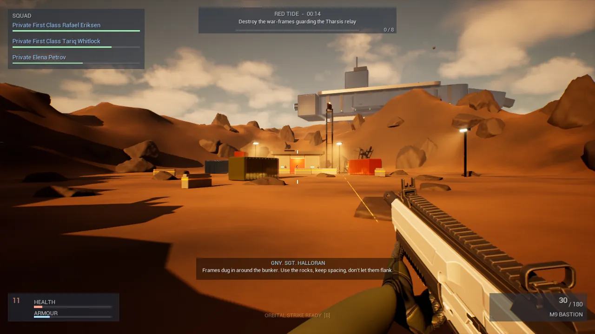
A squad-based science-fiction shooter in Unreal Engine 5, where every soldier has a name and the carrier remembers who didn't come back.
Raven Two-One on approach, pad two
Every soldier has a name. Every vehicle is real. Every world has its own rules. And when the operation is over, the carrier remembers who didn't come back.
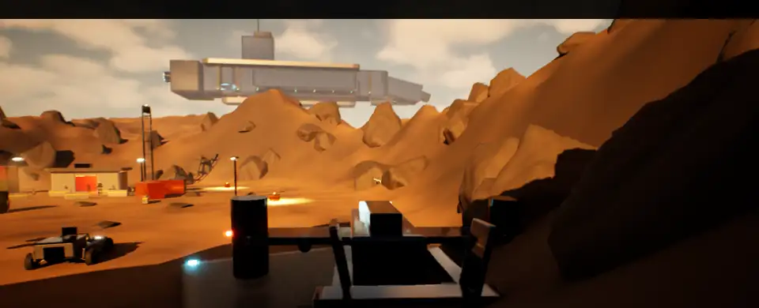
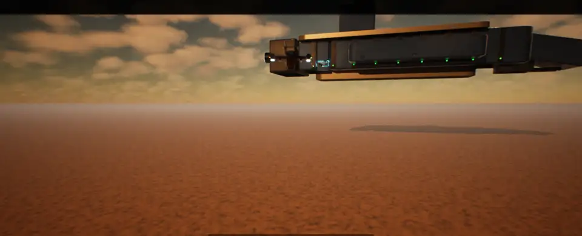
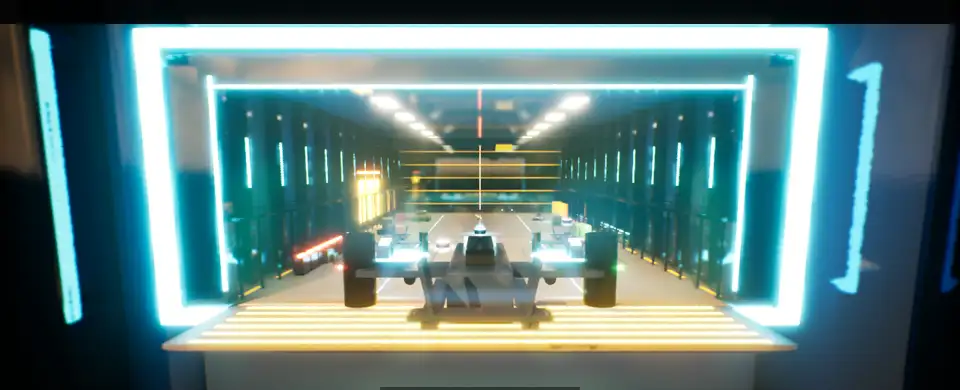
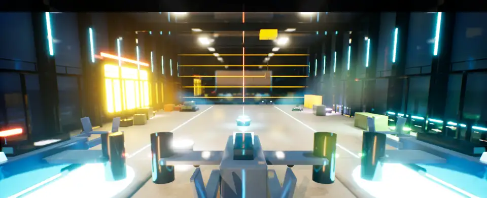
Three squadmates with names, ranks and careers take your orders: move, hold, suppress, flank, regroup. They find cover and drag you back up. When one of them dies, they stay dead, and the replacement is greener.

Tanks, a hoverbike, a missile boat, a 30 m walker you climb aboard, and the Raven gunship. When the op is done, the Raven lifts you off the ground and flies straight into the carrier's bay. There's no loading screen.
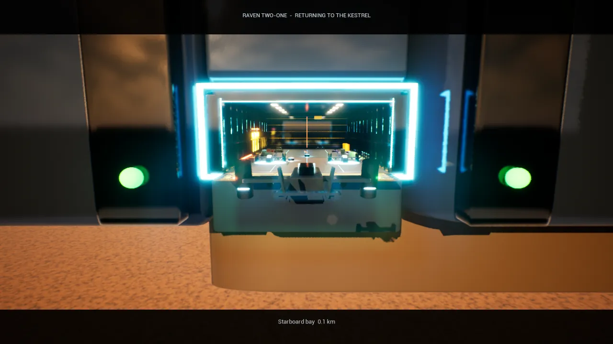
Back aboard, the hangar shows what the op cost: a name plate and a candle for each soldier lost, sealed lockers, the wounded in medbay beds, and deck crews welding the Raven back together.
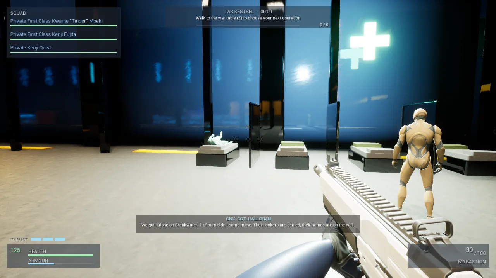
Drag the war table, or pick a world from the list. Some worlds are war zones. Some have people in the streets. One of them will send you home if you hurt anyone.
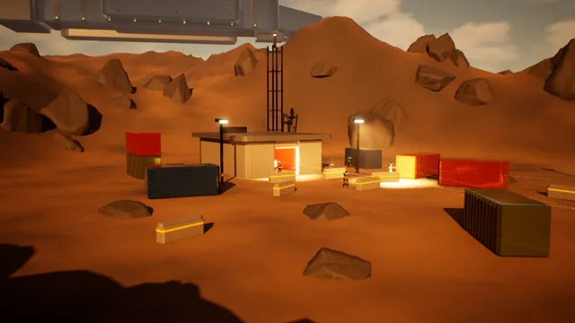
This is the squad system in miniature. Pick an order, then click the map (or move the marker with the arrow keys and press Enter). When you're ready, run the op. Cover, suppression and flanking decide who comes home, the same way they do in the game.
Pick an order, then choose a spot on the map.
In the game, every soldier killed in action gets a plate on the Kestrel's memorial wall. Here, so do the ones you lose planning ops above. The wall is kept in this browser only.
No names yet. Keep it that way.
Every frame here was rendered by the game itself. No mock-ups.
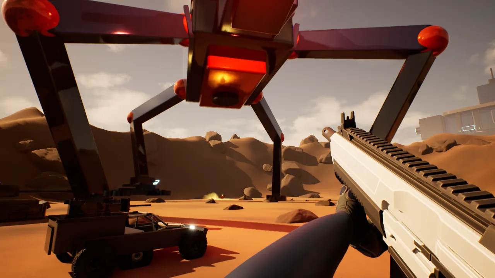
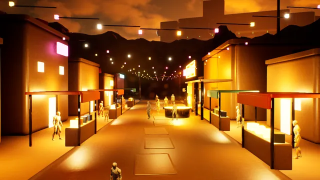
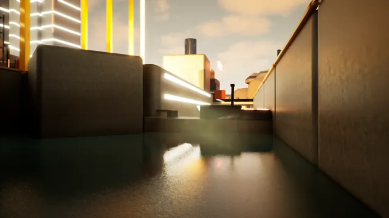
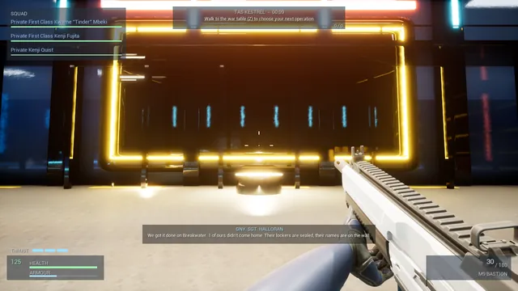
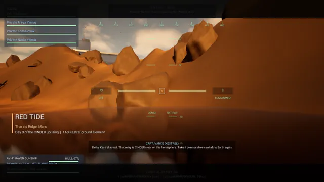
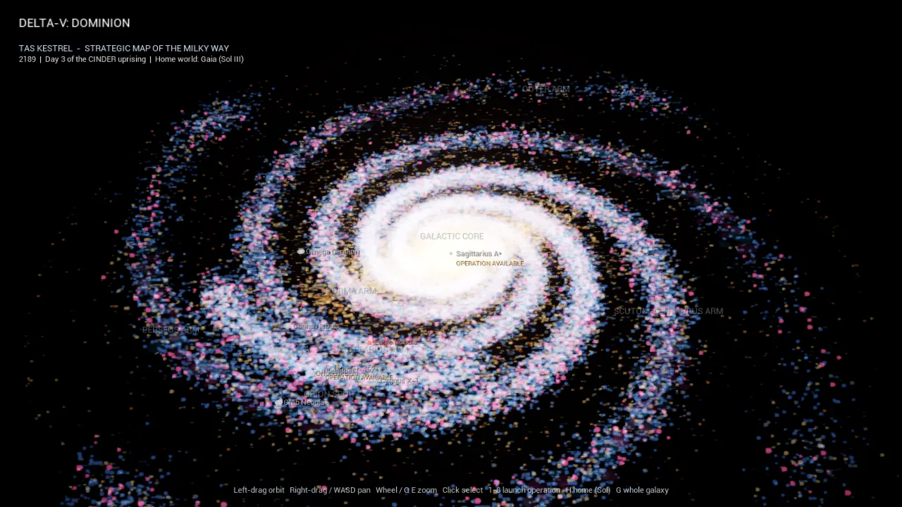
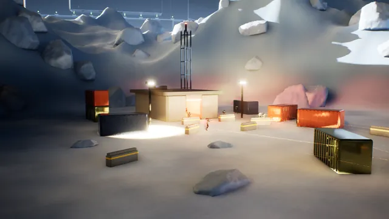
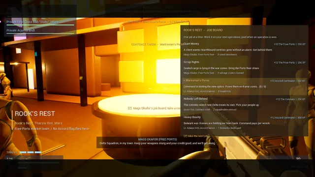
Version 0.24. Judged against the campaign plan, not against a finished game.
Download DeltaVDominion-Win64.zip (about 560 MB) from the latest release, unzip it, and run DeltaVDominion.exe. You'll need 64-bit Windows 10 or 11, a DirectX 12 graphics card and 8 GB of memory.
Clone the repository with Git Large File Storage installed, then open DeltaVDominion.uproject in Unreal Engine 5.8 and let it compile. The README has the full steps, the controls and the developer console commands.